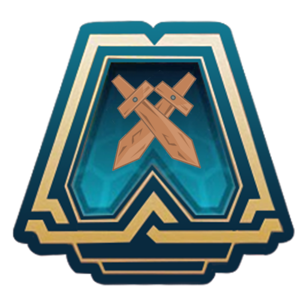

¿Qué es TFT?
Team fight Tactics es un estratégico gratuito de todos contra todos en el que participan campeones emblemáticos de League of Legends. ¿Cuál es el objetivo del juego? Hacer que tu equipo crezca y proteger tu tablero para convertirte en el último jugador en pie. Aquí encontrarás la información básica que necesitas para empezar:
Ubación
La empresa que diseño el juego esta ubicado en el corazón de la comunidad
¿Qué compisiones hay dentro del juego?
- PENTAKILL
- KDA
- DISCOS
- EDM
- TRUE DAMAGE
- PUNK
- JAZZ
¡Vamos a jugar juntos!
Si quieres saber más sobre cómo jugar Teamfight Tactics, te recomendamos echar un vistazo a algunos de estos sitios manejados por los increíbles miembros de la comunidad de TFT. Allí encontrarás descripciones detalladas de los rasgos de campeones y de los objetos, así como recomendaciones sobre cómo administrar tu economía y armar equipos poderosos (contenido en inglés).